Felix
Klein (1849-1925) hacia 1900.
Felix
Klein (1849-1925) hacia 1900.
Viaje de un profesor alemán a Eldorado
por Ludwig Boltzmann
~ 1905 ~
Dado que ya he estado en América varias veces, y una vez en Constantinopla, Atenas, Esmirna y Argel, muchos me han solicitado que publique algunas de mis experiencias de viaje. Escribir sobre cualquier otra cosa resultaría irrelevante, pero mi último viaje a California fue algo definitivamente exquisito, y por esta razón me aventuraré en una breve charla sobre el mismo.
De ninguna manera pretendo decir que para ver y gozar de cosas interesantes y hermosas sea necesario ir a California. En una visita a las bellas montañas de nuestra patria puede sentirse tanto placer y alegría como un ser humano es capaz de abarcar. Se puede ser feliz como un rey con una comida muy simple, pero California es como ostras con champaña Veuve Clicquot.
La primera parte de mi viaje ocurrió
a las apuradas, y así será relatada. El 8 de junio [de 1905]
asistí a la sesión de los jueves de la Academia de Ciencias
de Viena, como siempre. Mientras salíamos, un colega notó
que no me dirigía hacia Bäkerstrasse, como era de esperarse,
sino hacia el Stubenring, y me preguntó adónde iba. "A San
Francisco", contesté lacónicamente.
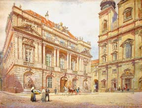 La Academia de Ciencias de Viena alrededor de 1900, en una acuarela de Sandor Kozeluh.
En el restaurant de la Nordwestbahnhof [estación de trenes] comí tranquilamente un plato de cerdo asado tierno, col y patatas y bebí algunos vasos de cerveza. Mi memoria para los números, tolerablemente precisa en otros casos, siempre me falla cuando cuento vasos de cerveza.
Nadie que haya viajado mucho se sorprenderá si hablo de comida y bebida. No es sólo un factor importante, es un punto central. Lo esencial cuando se viaja es mantener el cuerpo saludable al confrontarlo con una multitud de influencias extrañas, y sobre todo preservar el estómago, especialmente el fastidioso estómago vienés. Ningún vienés puede comer su último Gollasch mit Nockerl sin conmoverse, y así como los suizos concentran su nostalgia en la memoria del Kuhreihen y los cencerros, el vienés piensa en su Geselchte mit Knödeln. "Sagt nicht, das Alter machte mich kindisch, es fand mich eben noch als ein wahres Kind" ["No digan que la edad me volvió infantil: me encontró siendo todavía un niño"].
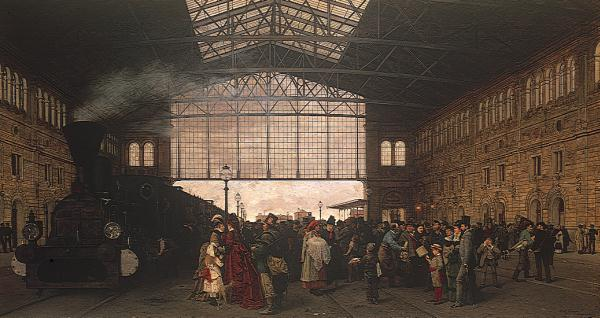 La Nordwestbahnhof de Viena en 1875.
Al terminar mi comida, aparecieron mi esposa y mis niños con mi equipaje ya listo. Adieu entonces y me puse en camino, primero a Leipzig para la conferencia conjunta de las academias, que empezaba el día siguiente a las diez de la mañana. En el tren, me hice lo más presentable posible (¡habría necesitado los washing rooms de los trenes americanos!), subí a un coche apenas arribamos a Leipzig y llegué puntualmente para la primera sesión.
En la puerta del aula encontré al colega Crender, que también se encaminaba a la conferencia y que amablemente me ayudó a llevar mi equipaje a la antesala, dado que había sido imposible dejarlo en otro lado.
Iba a la conferencia no sin ansiedad: se discutiría un problema que podía resultarme penoso.
¿Se aburrirá el lector si lo guío por un rato a través de una reunión científica, para mostrarle su estructura y cómo funciona? Espero que no. Hoy en día, casi no existe persona educada que no haya visitado, guiada por la Baedecker [guía turística], alguna fábrica de aceros, cueros, o vidrio; encuentro que satisfacer la curiosidad sobre cómo es que los objetos que usamos a diario alcanzan finalmente su familiar forma es tan entretenido como instructivo. ¿Por qué no supondré que existe la misma curiosidad sobre la mecánica de una fábrica que es, podría decirse, más importante para la cultura que la más grande fábrica de cuero aunque, esperemos, sin cuereadores?
Varias academias científicas y sociedades eruditas alemanas se han reunido y han decidido realizar conferencias anuales para discutir problemas de importancia general. Este es el Akademie-Kartell. La conferencia decidió hace años dar apoyo material a la publicación de una obra grandiosa, la Enciclopedia de Ciencias Matemáticas. La matemática ha ampliado considerablemente sus objetivos en el último siglo; además, cada autor usa sus propios términos especiales y frecuentemente escribe en forma tan oscura que sólo sus colegas más próximos pueden seguirlo, y esto con gran dificultad. Sin embargo, en esta complicada y casi siempre impenetrable literatura matemática se encuentra enterrado muchísimo material útil, hasta indispensable, que espera aplicación práctica.
El objetivo de la enciclopedia a la que nos referimos es reunir y presentar este material de manera ordenada y fácil de entender. Debería hacer fácilmente accesible a los matemáticos todo lo que se ha logrado en matemática, y al mismo tiempo establecer una relación entre la teoría y la práctica. La necesidad de tal enciclopedia de literatura matemática es tan claramente obvia, que el profesor Klein, de Göttingen, la ha descripto como una necesidad matemática pública.
Esta empresa no sería tan difícil si sólo fuera cosa de citar los logros más conspicuos sin mucha crítica y registrar los desarrollos más importantes y mejor conocidos. Sin embargo, extraer cada cosa realmente útil de oscuros escritos, desechar lo insignificante, lograr la cobertura más amplia posible de la literatura y, al mismo tiempo, disponer la información en una forma clara y simple para el beneficio de los lectores, parece una tarea casi aterradora para cualquiera que haya estudiado los escritos matemáticos. El ya citado profesor Klein, no obstante, se ha sentido atraído por estos problemas, las academias aportan dinero para los costos de impresión, los honorarios de los autores y los gastos de viajes, y Klein y su equipo están haciendo el trabajo.
Felix
Klein (1849-1925) hacia 1900.
El primer paso es encontrar al mayor experto mundial en cada especialidad. Alemanes y franceses, rusos y japoneses, trabajan armoniosamente juntos. El experto elegido es casi siempre un gran señor que tiene suficiente dinero y poco tiempo, y quizás poco interés por el trabajo, pero más obstinación de la que correspondería. Primero, debe inducírselo a que prometa una contribución, y luego debe instruírselo y persuadírselo con todos los medios para que escriba su artículo en modo compatible con el marco de toda la obra, y last but not least que mantenga su promesa dentro de los límites de tiempo.
Muchas horas pasan en deliberaciones sobre si debe incluirse un artículo simplemente porque se lo ha recibido, aún cuando sería mejor ubicarlo más tarde en la obra, mientras que los que deberían ir primero todavía no están escritos. Se gastan sumas sin límite para enviar a Klein y sus apóstoles a todos los rincones de la Tierra, de forma de no ahorrar a los autores la presión de una entrevista personal. Durante mucho tiempo quedó un espacio vacío ya que el hombre elegido para llenarlo, un oficial y matemático ruso, estaba preso en Port Arthur. Frecuentemente, he tomado parte de estas reuniones para discutir sobre la enciclopedia; los poetas de la escena alemana podrían sacar provecho de su dramatismo.
Volvamos a mí. Cuando Klein me propuso escribir un artículo para la enciclopedia, me negué durante largo tiempo. Al final, me escribió: "Si no lo hace Usted, se lo encargaré a Zermelo". Este hombre sostiene una opinión diametralmente opuesta a la mía, de forma que para que las teorías de Zermelo no se presentaran en la enciclopedia como la opinión de moda, escribí a vuelta de correo: "Ehe der Pestalutz es macht, mache ichs" ["Antes de que Pestalutz lo haga, lo hago yo"]. (Todas las citas están entre comillas; principalmente, son de Schiller, como una celebración suplementaria de su centenario. ¡Los lectores pueden intentar identificarlas por sí mismos!).
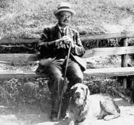 Ernst Friedrich Ferdinand Zermelo (1871-1956).
Ahora era el momento en que mi artículo debía estar listo. Habría preferido descansar en mi país en setiembre, para recuperarme de las fatigas del viaje, pero había dado mi palabra y por lo tanto debía revolver en la literatura matemática y preparar el artículo con una pequeña cohorte de físicos vieneses. "Ewigkeit geschworenen Eiden" ["Juramentos a la eternidad"].
El profesor Wirtinger parece haber sufrido un tratamiento similar, ya que dibujó como emblema de la enciclopedia una trampa para ratones: atraído por el señuelo, el profesor cae en la trampa.
Pero ¿dónde reside la irresistible atracción de la obra? No se recibe ningún honor particular, salvo el reconocimiento de haber hecho algo útil; no se hace dinero. ¿Cómo se las arregla Klein, con una percepción psicológica que los filósofos podrían envidiarle, para encontrar el punto débil de cada uno sobre el que fija sus ojos, y la clave para vencer la reluctancia de cada individuo? Es el idealismo el que le ha dado esta habilidad, y si abrimos nuestros ojos podemos ver idealismo por todos lados, hasta tan lejos como en el océano Pacífico [Boltzmann usa la forma literal "stille Meer" (="mar tranquilo") en vez de "Pazifik Ozean"]. Allí las dos robustas torres blancas del Observatorio Lick nos saludan, obra de un idealista y multimillonario; pero escribiré más sobre esto luego. He reflexionado largo tiempo sobre qué es más asombroso, que en América los millonarios sean idealistas, o que los idealistas sean millonarios. ¡Afortunado el país donde los millonarios piensan como idealistas, y los idealistas se convierten en millonarios! No obstante, la carne ahumada con pastas debe tenerse en alta estima; en todas partes los idealistas necesitan tener el estómago lleno.
El idealismo de Klein y sus colaboradores ha dado buenos frutos. Inmediatamente después de que apareciera la primera parte, fue necesario aumentar la edición; se ha comenzado una traducción francesa, y en breve la seguirá una inglesa. Las academias se atribuyeron un éxito y las librerías hicieron un buen negocio.
Desafortunadamente, la Academia de Ciencias de Berlín no pertenece al Kartell, y no está participando de la cosa. Tampoco estuvieron representados en el Congreso de Meteorólogos de Southport ni en el Congreso de Investigación Solar de St. Louis. Me temo que este principio de no participar en nada que ellos no hayan creado los perjudicará a ellos mismos y a Alemania, más que a la ciencia. Me molestó que en Southport y en St. Louis se haya dado prioridad a los franceses entre los foreigners (no ingleses). ¡Los alemanes no tenemos por qué estar en un segundo plano respecto de ellos! Pero ¿qué podía hacer yo siendo austríaco? Si por lo menos Hahn hubiera estado presente en lo de los meteorólogos, donde se lo echó tanto de menos. ¡Pero no se lo puede convencer de que viaje!
Habiendo llegado a este punto, daré rienda suelta a mi lengua. No ocultaré que un colega americano me ha hablado de la decadencia de Berlín. Es un hecho que en los tiempos de Weierstrass, Kroenecker, Kummer, Helmholtz y Kirchhoff, la mayoría de los matemáticos y físicos americanos iban a estudiar a Berlín, pero ahora prefieren Cambridge o París. Dado que cada vez menos gente llega a conocer bien a los alemanes, América y, consecuentemente, el mundo están alejándose. El mismo colega sostenía también que la situación habría mejorado mucho si yo no hubiera rehusado la cátedra en Berlín. Ciertamente, mis lecciones habrían sido una mejora mínima, pero un solo hombre puede tener un peso tremendo en la discusión de nombramientos y en la creación de puestos, si trabaja con el idealismo y la firmeza de Klein. Muchos que no aceptaron puestos lo habrían hecho si se los hubiera abordado apropiadamente. Un pequeño engranaje que funciona correctamente en el lugar correcto puede lograr grandes resultados.
*****
Si me detengo tanto en cada ciudad del tamaño de Leipzig, no voy a llegar muy lejos; "aber man muss die Einwohner nicht zählen, sondern wägen" ["pero uno no debe contar los habitantes, sino pesarlos"]. Esto se refiere, por supuesto, a su relevancia intelectual.
Luego de varias cenas íntimas, muy agradables, y una oficial, donde encontré por primera vez en persona al ministro de educación de Sajonia, Seydewitz, bajo cuyo mandato había sido profesor durante dos años, viajé a Bremen y desde allí a Nueva York, con un Príncipe Hohenzollern. Con esto no quiero decir que haya tenido el honor de acompañar a este príncipe en un viaje a América, sino que él me llevó sobre su espalda. Fueron el Kronprinz Wilhelm [Príncipe Heredero Guillermo] a la ida, y el Kaiser Wilhelm II [Emperador Guillermo II] a la vuelta.
Querido lector, mi apuro es grande, pero no puedo dejar pasar la travesía de Bremen a Nueva York con una broma tan banal. Los grandes trasatlánticos están entre las más admirables de las invenciones humanas y cada viaje en ellos se hace más agradable que el anterior. ¡El maravilloso mar ondulante, cada día diferente y cada día más asombroso! Hoy espumeante y blanco, salvajemente rabioso. ¡Miren aquella nave! ¡Las olas se la han tragado! ¡Pero no! El casco aparece de nuevo, victorioso.
Mañana el tiempo está calmo nuevamente, el mar suave pero tristemente gris; gris como el cielo, como se pinta la melancolía. Entonces el sol irrumpe entre la niebla y chispas amarillas y rojas danzan sobre las olas entre las oscuras extensiones bajo la sombra de las nubes; la luz dorada se combina con la oscuridad.Y luego el cielo entero está azul de nuevo -el mar, zafiro y blanco, brilla tanto que tengo que cerrar los ojos. Sólo en días especiales el océano lleva su más hermoso vestido ultramarino, un color tan profundo y sin embargo tan brillante, bordeado por la lechosa espuma blanca como por un lazo. Una vez reí al leer que un artista había buscado por días y noches un color particular; ahora ya no me río de eso. Me emociono ante la vista de este color en el océano; ¿cómo es que un mero color puede traer lágrimas a los ojos? Considérese también el efecto del claro de luna o la fosforecencia en una noche oscura. Es necesario un artista para expresar todas estas maravillas, y aún en ese caso sería imposible.
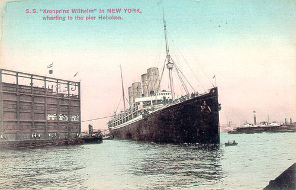 El Kronprinz Wilhelm entrando en Nueva York.
Si hay una cosa que merece más admiración que esta belleza natural, es el arte de los hombres que ganaron la batalla contra el mar infinito, iniciada mucho antes del tiempo de los fenicios. ¡Cuán desprotegida se desliza la quilla sobre el agua!¡Cuán salvajemente hace espuma el dios del mar alrededor de la batiente hélice! ¡En verdad, las mayor maravilla de la naturaleza es el hábil espíritu del hombre!
Si se me preguntaran, como a Solón, cuál es el más feliz de los mortales, citaría a Colón sin ninguna duda. No es que otros descubrimientos no igualen al suyo: el del alemán Gutenberg, por ejemplo. La felicidad, sin embargo, depende del efecto de los sentidos, que debe haber sido máximo en el caso de Colón. No puedo poner nunca el pié en América sin una cierta sensación de envidia hacia él, o tal vez de éxtasis por compartir una pequeña parte de su gozo. Obviamente Colón no hizo la travesía con el Kronprinz Wilhelm ni vio Nueva York con sus propios ojos, pero con los ojos de su mente pudo haber visto más que nosotros, ¡Nueva York dentro de cien, doscientos años!
Colón se ha convertido en el prototipo de los descubridores. Su "siempre, siempre hacia el Oeste" representa su perseverancia, su "¡tierra, tierra!" la alegría del éxito, y su entera aventura la convicción de que la vida no es la posesión mayor. "Setzest du nicht das Leben ein, nie kann dir das Höschte gewonnnen sein" ["Si no arriesgas la vida, nunca alcanzarás lo más alto"].
Todos los sentidos, no sólo el de la belleza, encuentran completa satisfacción en un viaje por el mar. Abundante y buena comida cuida el gusto, una buena orquesta el oído. Alli aparecen nuestros compositores vieneses, obviamente no los verdaderamente grandes, sino Strauss, Ivanovici, Waldteufel, entre otros. Las "Donauwellen" [ondas del Danubio] se aplauden con entusiasmo sobre las olas del océano Atlántico, y si pensamos en Haydn, Mozart, Schubert, Beethoven, podemos decir del Danubio como dijo Schiller una vez del Ilm, que "ihre leiseren Wellen im Vorüberziehen manch unsterbliches Lied erlauscht haben" ["sus tranquilas ondas escucharon al pasar más de una canción inmortal"].
En fin, no hay nada más confortable que la vida a bordo de una nave, particularmente para aquellos a los que Dios ha librado de los mareos y les ha dado la habilidad de observar imperturbablemente a toda esa gente tendida sobre la cubierta. El gozo llega a su clímax cuando un accidente hidrodinámico hace caer inesperadamente una ola sobre la cubierta y quienes tomaban sol medio dormidos saltan con gritos estridentes.
Siempre que entro en el puerto de Nueva York me llena una especie de éxtasis. ¡Esos imponentes edificios y la estatua de la Libertad con su antorcha dominándolo todo! Y todo el tiempo las naves silbándose y cantándose unas a otras: una da una clara advertencia, otra se aterroriza, chillando, esta silba alegremente, aquella se lamenta con tristeza en cuartas. Los inimitables tonos de las sirenas también resuenan alrededor. Si fuera músico, compondría una sinfonía: El Puerto de Nueva York.
En esta ocasión, sin embargo, no tuve tiempo para sentimentalismos. Inmediatamente, tomé un taxi en Hoboken, que me debía llevar primero a la office del Southern Pacific Railroad y de allí derecho a la estación; todo por tres dólares. Pero en la office me enteré de que el tren para el que tenía un pasaje con descuento partía dos veces por semana, de modo que tendría que esperar en Nueva York dos días. Redirigí mi coche al hotel Westminster y tuve tiempo de explorar Nueva York.
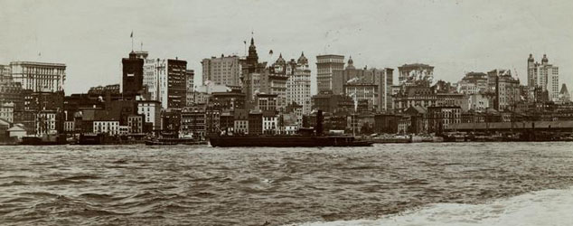 Nueva York a principios del siglo XX.
Tampoco Nueva York es aburrida. Un simple viaje en tramway ofrece mucho material para el entretenimiento y la observación. No hay boletos, no hay límites al número de pasajeros, ni diferentes tarifas. El conductor controla a cada nuevo pasajero con ojo de halcón; el pasajero le da cinco centavos en la mano; un tirón a una cuerda y el dinero llega a una caja registradora en el techo del coche. Simultáneamente suena una campana, que oyen todos los presentes. Si se tiene un lugar cerca del conductor es posible maravillarse con una habilidad para conducir que podría rivalizar con el liderazgo de Napoleón I o de Moltke. La velocidad demencial con que hacemos los tramos rectos, cómo ganamos posiciones a los automóviles (estos simplemente pasan a coches y tramwaycars en curvas cerradas), todo esto y mucho más puede verse en la vida real de Nueva York.
Al tercer día mi viaje tomó velocidad: viajé de Nueva York a San Francisco en cuatro días y cuatro noches. El pasajero es simplemente catapultado, disparado hacia adelante, por así decir. Los golpes y sacudidas que se reciben al caminar por el tren sin fin hasta el comedor, el vagón de observación, etc., no son muy agradables. Los vagones de observación están abiertos en el fondo, y es posible sentarse sobre la baranda o asomarse sobre ella, en cuyo caso hay que tener cuidado de no caerse en un salto muy brusco.
El paisaje era innegablemente monótono en general, aunque la observación de viajar a mucha velocidad es interesante en sí misma. Si se mira hacia atrás desde el vagón de observación, las líneas de los rieles parecen una cinta infinita empujada desde abajo del vagón a una velocidad furiosa. Asimismo fue interesante cruzar Salt Lake [Boltzmann usa la forma traducida "Salzsee"] sobre un gigantesco puente de madera y ver los campos antes y después del lago cubiertos con cristales de sal, como si fuera nieve. Cruzar la Sierra Nevada hacia el final del viaje fue también muy hermoso; me recordó al Semmering, claramente no tan pintoresco, pero mucho más impresionante en la extensión y altura de las montañas.
Como resultado del retraso en Nueva York llegué a Berkeley tarde. La escuela de verano comenzaba el 26 y yo no llegué hasta esa noche. Dado que el día había sido desperdiciado con discursos introductorios, inscripciones, etc., no habría perdido una sola hora si hubiera empezado el día siguiente a las 9 de la mañana. Desafortunadamente, no estaba dentro de mis posibilidades manejarlo. El efecto de cuatro días de traqueteo y sacudidas se hizo sentir en este punto. Era incapaz de caminar regularmente sobre tierra firme y durante la noche, en la cama, me despertaba constantemente y aterrorizado, ya que nadie me sacudía y sin embargo soñaba con eso.
Ahora, debo confesar que siempre me atemorizo un poco antes de la primera conferencia, particularmente aquí, donde debía hablar inglés. Durante el viaje, había tenido menos oportunidades de conversar en inglés de las que esperaba. Los alemanes que podrían haber hablado inglés cambiaban al alemán luego de unas pocas palabras, y los genuinos ingleses no hablaban para nada.
Mi conversación en inglés tuvo lugar como sigue:
Yo: When lunch will be served?
Él: ieeöö.
Yo: I beg you, could you say me, at what hour lunch will be served?
Sus sonidos guturales bajan más de una quinta: aoouu.
Me doy cuenta del error en mi plan de ataque y grito desesperadamente: lönch, lanch, lonch, launch y cosas por el estilo. Produzco vocales que jamás se habrían encontrado entre los tipos de Gutenberg. Ahora su rostro muestra un tenue rayo de entendimiento: Ah, loanch? Se ha establecido el puente de compresión:
Yo: When? At what hour? When o'clock?
Él: Half past one!
Nos hemos entendido. ¡Y ahora se suponía que yo tenía que dar treintas clases en ese idioma! Por lo tanto, me declaré incapaz de trabajar el 27 de junio, y empecé el miércoles. Durante la primera lección estuve un poco tímido, pero para la segunda estaba más relajado y cuando finalmente oí que los estudiantes me entendían correctamente, y que de hecho encontraban mi presentación lúcida y clara, en seguida me sentí como en casa.
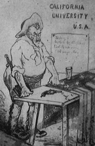 Boltzmann dando clase en Berkeley, en una caricatura de K. Przibram.
En este punto no puedo menos que expresar mi gratitud por este éxito a mi profesora de inglés en Viena, Miss May O' Callaghan. Sin sus incansables esfuerzos para ayudar a mi inquieta lengua, nunca lo hubiera logrado. ¡Con cuánto orgullo usé las palabras Blackboard y Chalk como si me vinieran naturalmente, cuando necesité tiza y un pizarrón suficientemente grande! ¡Con qué éxito pronuncié Algebra, Differenzialcalculus [sic], Chemistry, natural Philosophy, etc.!
Gracias a mis esfuerzos también logré que me sirvieran una ensalada de langosta. En el menú decía lobster salad. Inmediatamente recordé la lección en la que apenas podía creer que langosta se tradujera como lobster; así que comí lobster y estaba deliciosa.
*****
La Universidad de [California en] Berkeley, donde estuve trabajando, es el lugar más hermoso que pueda imaginarse. Un parque de un kilómetro cuadrado, con árboles que deben ser centenarios, ¿o milenarios? ¡Quién pudiera decirlo de una mirada! En el parque hay espléndidos edificios modernos, obviamente ya demasiado pequeños; sin embargo, hay nuevos en construcción, dado que no falta ni espacio ni dinero.
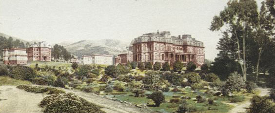 Universidad de California, Berkeley, en 1901.
Una cierta aura filosófica rodea la universidad. Berkeley es el nombre de un distinguido filósofo inglés, a quien se acredita haber descubierto la mayor locura nunca creada por el cerebro humano, es decir el idealismo filosófico, que niega la existencia del mundo material; idealismo en un sentido muy diferente del que yo lo entiendo. En Berkeley, la enseñanza de la filosofía tiene una estructura propia; no como un sistema construido de frases y fantasías -perdón, quiero decir conclusiones lógicas y conceptos racionales- sino como una estructura real de piedra y madera donde la psiquis se explora con diapasones, espectros, quimógrafos y cilindros de grabación.
Más importante para mí fue otro edificio. Un hotelero especulativo había leído en una enciclopedia que Berkeley era un obispo inglés, cuya residencia se llamaba Cloyne Court, de forma que construyó un alojamiento para profesores con ese nombre; es aquí donde estuve viviendo. Este hombre dio poca importancia a cualquier parecido exterior con un antiguo palacio obispal inglés; Cloyne Court fue construido sobre Euklid [sic] Avenue y es un paralelepípedo exacto, sin trazas de nada no euclidiano. El interior, sin embargo, es confortable. Tuve un pequeño dormitorio, con un estudio un poco más grande y un baño, todo con luz eléctrica. Podía hacerse circular agua caliente en las habitaciones por gruesos tubos, para calentarlas razonablemente; esto fue bienvenido con frecuencia aún en julio, a una latitud al sur de Palermo, ya que el viento que sopla desde el Pacífico a veces era helado. En cambio, el invierno en Berkeley es apenas más frío que el verano; en invierno llueve mucho, y en verano nada.
La comida era buena. Al menos, casi siempre se podía tragar alguno de los platos ofrecidos. No había menú impreso. Antes de cada comida, las camareras, casi todas con lentes, recitaban el menú; parecía más bien una canción monótona tocada con sordina.
"Doch des Lebens ungemischte Freude ward keinem Irdischen zuteil" ["Pero las alegrías puras de la vida nunca tocaron en suerte a lo terrenal"], ni siquiera en un viaje a Berkeley. Mi estómago tiene la palabra en primer lugar. Hasta que llegué, no había bebido ni de botellas de agua abiertas ni de botellas selladas con agua y ácido carbónico [soda], de forma que mi estómago se había mantenido sano a pesar de la comida poco familiar. Pero Berkeley es abstemia: beber o vender cerveza o vino está estrictamente prohibido. Dado que no quería morir de sed probé el agua, pero sin hielo -tal vez sería más saludable que en Nueva York o en St. Louis. ¡Lamentablemente no! Mi estómago se rebeló, y después de haber tenido que pasar la noche entera vestido, para no tener que vestirme y desvestirme demasiado seguido, me animé a preguntarle a un colega dónde podía comprarse vino. El efecto que produjo mi pregunta me recordó a una escena en el vagón para fumar de un tren de Sacramento a Oakland. Un indio [de la India] se nos había unido, y nos preguntó muy cándidamente la dirección de un... bueno, como era un indio, digamos que la dirección de una casa de bayadères en San Francisco. La mayor parte de las personas en el vagón era de San Francisco, y ciertamente en esa ciudad hay chicas que recitan el "Give me money, I give you honey," pero todo el mundo estaba perplejo y avergonzado. Mi colega reaccionó exactamente de la misma manera cuando pregunté por el vendedor de vino. Miró alrededor ansiosamente para ver si alguien escuchaba, me midió con la mirada para comprobar si podía confiar en mí, y finalmente salió con el nombre de un excelente negocio donde venden vino californiano en Oakland. Me las arreglé para contrabandear una batería completa de botellas de vino y a partir de ese momento el camino a Oakland se me hizo muy familiar. También mi estómago dijo amén y se recobró asombrosamente rápido, si bien el resto de mi dieta no cambió. Tenía que beber siempre mi vaso de vino subrepticiamente luego de las comidas, de forma que casi me sentía como adicto a un vicio. La abstinencia está en camino de crear un nuevo tipo de hipocresía, de la cual ya hay suficiente en el mundo.
Mi estómago estaba apenas pacificado cuando apareció otro achaque. Anteriormente, mi molesta asma siempre había desaparecido apenas embarcado en un vapor y no reaparecía hasta mi vuelta a suelo europeo. Lo mismo sucedió esta vez, hasta que llegué a California: el muy loado fresco del clima trajo a la indeseada huésped, el asma, a atormentarme.
Luego me apareció una ampolla bajo el brazo (creo que como resultado de ponerme una camisa nueva sin lavar) y tuve que hacérmela perforar en el Roosevelt Hospital. Fue extremadamente interesante llegar a conocer en tanto detalle un hospital americano, que competía con el Kaiser Wilhelm II en elegancia (me refiero por supuesto al vapor) pero que me costó 35 dólares. Este fue el lujo más caro que me permití durante todo el viaje, y que en consecuencia me privó de placeres menos dudosos.
El martes 4 de julio era el Independence Day, la mayor fiesta americana, y no tenía clases el sábado ni el domingo, de forma que me bastaba con suspender la clase del lunes, o posponerla, para disponer de cuatro días libres para una visita rápida al Yosemite Valley. Tuve que abandonar este proyecto, pero en cambio el domingo 2 de julio escuché la half hour of music que todos los domingos se ejecuta gratis en el Teatro Griego. Este es una réplica del teatro de Sófocles en Atenas, excepto, según me pareció, porque se lo ha agrandado un poco. Como en Berkeley nunca llueve en verano y hay poco sol debido a la constante neblina, el teatro al aire libre es una buena idea. La música, sin embargo, sonaba constantemente débil en este lugar arquitectónicamente hermoso, rodeado de eucaliptos y lifeoaks [robles siempreverdes de California]. Habría sido un lindo escenario para Mahler y la Orquesta Filarmónica [de Viena] tocando la tercera sinfonía de tal forma que los árboles habría vibrado en éxtasis y el océano Pacífico, aguzando el oído, se habría calmado aún más; la gente no lo habría entendido, sin embargo.
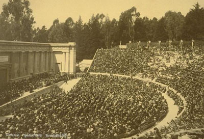 El teatro griego de Berkeley.
El martes, desde la terraza de Cloyne Court, presencié los soberbios fuegos artificiales con que celebraron, como todos los años, el Independence Day. Cloyne Court está situado sobre terreno alto y tiene vista a la bahía de San Francisco, el Golden Gate [Boltzmann usa la forma traducida "goldene Tor"], el Mount Tamalpais etc.; difícilmente el obispo inglés haya podido tener una vista más hermosa desde su Cloyne Court.
El mismo Dios parecía complacerse en la celebración, ya que en la puesta de sol tomó la iniciativa con una exhibición de fuegos de artificio digna de su grandeza y su creación. ¡Como muchas otras veces durante mi viaje a América, me habría gustado saber pintar!
Cuando las últimas trazas del atardecer desaparecieron y las luces de San Francisco se encendieron alrededor de la bahía, los fuegos de artificio terrenales dieron comienzo. Ora una brillante luz resplandecía a nuestros pies, ora una luminosa estrella se encendía hacia el horizonte. ¿Adónde mirar? Berkeley y San Francisco resplandecen con los fuegos; sobre Oackland hay un espectáculo similar. Apenas miro en esa dirección, me pierdo uno mejor en Alameda. Me prometo montar un pequeño espectáculo de fuegos artificiales en mi jardín el 4 de julio de cada año. Después de todo, históricamente, la lucha de Washington y sus seguidores no tuvo solamente significado local sino mundial.
Una vez, Schiller dijo "Noch ein paar tausend solche Kerle wie ich, und aus Deutschland soll eine Republik werden, gegen die Rom und Sparta Nonnenklöster waren" ["Sólo un par de miles de tipos como yo, y Alemania sería una república, ante la cual Roma y Esparta parecerían conventos de monjas"]. Claramente, estos planes no se han cumplido. ¿Unos miles como tú? El mundo no ha producido ni siquiera uno más. Pero las ideas no mueren. ¡La república, al lado de la cual Roma y Esparta parecerían conventos de monjas, existe allende el océano, y cuán colosal es y cómo crece! "Die Freiheit brütet Kolosse aus" ["La libertad incuba colosos"].
*****
Subsecuentemente, me invitaron a varios lugares durante los sábados y domingos. La primera vez fue a la esplédida estancia de Mrs. Hearst, cerca de Livermore. ¿Quién es Mrs. Hearst? No es fácil de explicar a un europeo. Lo más cercano a la verdad sería decir que ella es la Universidad de Berkeley. En Europa, el alma mater es una figura clásica idealizada; en América, es una persona real y, lo que es más importante, con millones reales, algunos de los cuales dona cada año para la expansión de la universidad; mi visita a América se pagó con su dinero, naturalmente. El presidente de la universidad (que nosotros llamaríamos rector, pero cuyo puesto dura de por vida) es solamente un agente ejecutivo de los trustees, a cuya cabeza está Mrs. Hearst. El presidente actual debió estipular todo tipo de derechos y privilegios al asumir el puesto, de forma que pudiera hacer algo por la universidad de su propia autoridad.
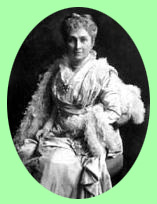Phoebe Apperson Hearst (1842-1919).
Aún peor -pero ¿por qué digo "peor''?- ¿cómo podría alguien que, como yo, ha disfrutado de muchas horas felices gracias a la hospitalidad de Mrs. Hearst, mantener que tal alma mater pueda ser algo perjudicial? Más duras son las condiciones en la Leland Stanford Junior University de Palo Alto, que visité durante todo un día.
Mr. Leland Stanford senior tuvo a su cargo la construcción del primer ferrocarril al Pacífico, es decir, la primera línea que conectó el Atlántico y el Pacífico. Fue también influyente en el Congreso: sabía como mostrar la importancia de su empresa en la forma apropiada e indujo al Congreso a asumir la mitad de los costos, reservándose ciertos derechos exclusivos para él, pero dejando las ganancias principalmente a los contratistas. Luego, el señor Stanford fundó una compañía con un nombre completamente diferente, que debía proveer los materiales y la mano de obra al ferrocarril. Dado que era el dueño de ambas compañías, se las arregló fácilmente para que una le comprara a la otra al doble de precio. El estado pagó nominalmente la mitad, es decir, en la práctica el costo completo, y él embolsó toda la ganancia.
Justo cuando se había convertido en un hombre enormemente rico una desgracia repentina le arrancó su único hijo, que debía heredar todo su fortuna. Él y, muy particulamente, Mrs. Stanford cayeron en una suerte de manía religiosa. En Europa, cuando una dama se vuelve un poco loca, se compra una docena de gatos o un loro; aquí, Mrs. Stanford contrató un maestro mayor de obras de primera clase (¿qué no se puede obtener con dinero?) y construyó una universidad que ciertamente será una bendición para las generaciones futuras.
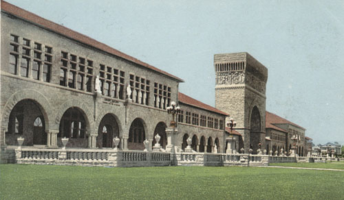 Entrada principal, Standford University, en 1904.
Mientras que Berkeley está construido como una serie de pabellones, Stanford se diseñó de acuerdo a un plan unificado y arquitectónicamente atractivo, que sin embargo no parece apropiado para los propósitos de la enseñanza. Los arquitectos son iguales en todas partes. La iglesia [Memorial Church] de la universidad es particularmente magnífica, decorada ricamente con murales en paredes y techos, con vidrieras y esculturas. El órgano, que fue ejecutado en mi presencia, tenía un sonido tan hermoso que me convertí en devoto oyente de tal música.
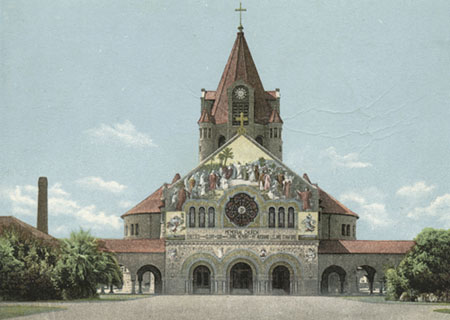 Memorial Church, Standford University, en 1904.
Luego de que su esposo muriera, Mrs. Stanford continuó sola, por largo tiempo, con la universidad. Ahora, ella murió también, pero no sin antes proveer generosamente a la universidad en su testamento.
Se dice que un profesor de política económica de Stanford criticó una vez el fraude cometido por el fundador; el presidente pensó que se congraciaría con Mrs. Stanford despidiendo al profesor inmediatamente. Mrs. Stanford, sin embargo, era tan magnánima que volvió a tomar al profesor y reprendió al demasiado celoso presidente.
Huelga decir que en tales universidades los estudiantes hombres y mujeres y el personal masculino y femenino tienen iguales derechos, y voy a mencionar un ejemplo drástico para probar el alcance de la influencia del elemento femenino. Una de mis colegas -recuerdo su nombre: Miss Lilian Seraphine Hyde, una mujer nada fea- dio una lección sobre la preparación de ensaladas y postres, que fue anunciada exactamente como las mías. Todavía puedo mostrar el programa de lecciones de ese día.
Todas las aulas de la universidad están llenas de mujeres, cuyo número no debe estar muy por detrás del de los estudiantes hombres. Es particularmente notable encontrar un sombrero de mujer en cada habitación. En la sala de profesores, un sombrero de mujer; en la habitación que sirve de lavatorio, cabina telefónica, etc., un sombrero de mujer; en el laboratorio fotógrafico, un sobrero de mujer; de hecho, cuando salí del hospital luego de la operación que ya mencioné, sintiéndome un poco débil y confuso, en mi distracción casi me pongo un sombrero de mujer en vez del mío.
Volvamos ahora a Mrs. Hearst, el alma mater berkeleyensis. Como ya dije, me había invitado junto con otros profesores que disertaban en la escuela de verano, a su estancia cerca de Livermore, una joya que sólo el lujo, la riqueza y el buen gusto pueden crear en manera tan abundantemente equipada. Los coches nos esperaban en la estación del ferrocarril, y pronto estábamos pasando por el portón de entrada, claramente de fantasía pero no falto de atractivo, a un parque cubierto de magníficos árboles y hermosas flores. Aquí la riqueza se traduce en agua y, donde no se la ahorra, hay flores tanto en verano como en invierno. Lentamente, aunque demasiado rápido para mí, cruzamos el parque, que también ofrecía la más hermosa vista de Mount Diable y Mount Hamilton. Finalmente llegamos a la casa. Está construida en estilo portugués-mexicano, con un círculo de edificios alrededor de un patio cerrado por pesadas puertas de hierro; obviamente, una especie de fortaleza. La pieza central del patio es una antigua fuente de mármol que nuestra anfitriona compró en Verona y fue transferida al Pacífico. La estancia se llama, en consecuencia, "Hazienda del pozzo di Verona" [en realidad, Hacienda del Pozo de Verona, originalmente en castellano].
Uno de mis compañeros de viaje explicó que la propietaria había contratado un arquitecto alemán de nombre Schweinfurt, que diseñó este lugar luego de estudiar las viejas construcciones españolas y portuguesas [?] de México. Observé: "Debió haber tenido muy buen gusto,'' a lo que mi compañero replicó: "Sí, y murió por causa de su buen gusto". "¿Qué ocurrió?" pregunté. "Los vinos californianos le gustaban tanto que bebió hasta morir". Estos californianos tiene una opinión terrible de sus vinos, que ciertamente son muy fuertes. No fue tan triste después de todo. Algún día, también yo moriré y dejaré de beber; por lo tanto voy a seguir consumiendo alcohol hasta que muera.
El interior de la hazienda es un cofre del tesoro lleno de las más soberbias obras de arte y curiosidades, que la propietaria ha coleccionado en cada rincón del viejo y del nuevo mundo: una mezcla muy original de curiosidades griegas, romanas, medievales, mexicanas, chinas, japonesas e indias.
En la mesa, me senté a la derecha de Mrs. Hearst, dado que era el único europeo presente. El primer plato eran moras, que decliné. Seguía un melón que la dueña de casa había condimentado para mí con sus propias manos. Decliné de nuevo. Luego vino oatmeal [puré de avena], una pasta indescriptible con la que la gente engordaría gansos en Viena -aunque tal vez no, ya que dudo que los gansos vieneses quisieran comérselo. Ya había notado la mirada de desagrado del alma mater cuando rechacé el melón. Hasta un alma mater está orgullosa de su cocina. Giré la cabeza, casi me sofoco y, gracias a Dios, no vomité. Esto es lo desagradable de aceptar invitaciones en América. En los hoteles puede dejarse lo que no se quiere comer, pero ¿qué puede hacerse cuando uno está frente a un ama de casa orgullosa de la cocina americana en general y de la suya en particular? Afortunadamente, siguió pollo, compota y varias otras cosas con las que recuperé el sentido del gusto.
Luego de la cena, entramos en la sala de música que, yo diría, es del mismo tamaño que la Bösendorfer Saal [de Viena], pero ¡qué decoración barroca de fantasía! En términos de belleza, no podría comparar ninguna de las más pequeñas salas de concierto vienesas con ésta. A la hazienda habían llegado noticias de mi menos que aceptable habilidad en el piano. Se me pidió abrir el concierto. Después de alguna resistencia, me senté al piano, un Steinway de los más caros. Sin aprensión, ataqué las teclas; tal vez haya escuchado algún piano con un sonido tan hermoso en algún concierto, pero mis dedos nunca habían tocado uno. Si los inconvenientes que acosaron mi visita a California me habían llevado a lamentarla alguna vez, desde ese momento cesaron. Toqué una sonata de Schubert; obviamente, al principio encontré raro al mecanismo, pero ¡cuán rápido se acostumbra uno a las cosas buenas! La segunda parte del primer movimiento salió bien, y en el segundo movimiento, un andante, me dejé llevar completamente: no estaba tocando la melodía, guiaba a mis dedos. Tuve que contenerme para no tocar también el allegro, lo cual fue afortunado ya que allí mi técnica habría fallado. A continuación tocó un alumno de Barth en Berlín, con tanta técnica como comprensión de la música. Entre los presentes había un profesor de música de Milwaukee, de figura masculina y marcial, ciertamente un espléndido cazador de osos, pero también con una educación musical básica. El también había practicado música con Barth, si bien no puede decirse que hubiera estudiado. Sabía que Beethoven escribió nueve sinfonías, y que la novena era la última. Me hizo un cumplido inesperado: en el curso de un debate sobre si la música podía ser humorística, me pidió que tocara el scherzo de la Novena Sinfonía. ¿Debería admitir ante un profesor de Milwaukee que no podía hacerlo? Me puse también humorístico y le dije: "Con gusto, pero lo comprometo a que toque Usted el timbal ya que sale mejor si alguien me acompaña," con lo cual se quedó callado.
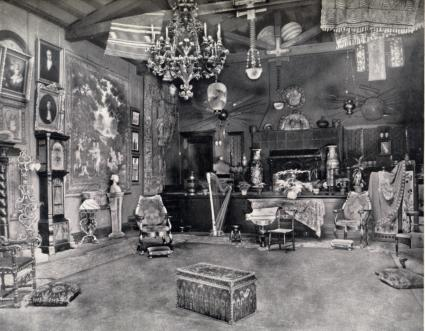 La sala de música de la Hacienda del Pozo de Verona.
A la noche, en la hazienda, dormí en una maravillosa habitación con baño, y con un negro que me cuidaba, quien también me lustró los zapatos. Un ángel de la guarda de ideal belleza colgaba justo sobre mi cama. Soy particularmente aficionado al arte cuando alimenta los pensamientos. ¿De qué me sirve tener en casa una pintura de la batalla de Abukir, no importa cuán espléndida sea? Pero un ángel de la guarda en la cabecera de la cama expresa hasta cierto punto el deseo de la anfitriona de que yo duerma bien en su casa. Sí, soy supersticioso. Justo en ese momento estaba con asma, y ya había pensado dos veces si ir a la hazienda o no. El ángel de la guarda me confortó y la persistencia del asma desapareció desde esa noche.
Al día siguiente, inspeccionamos interminablemente los interesantes objetos de la casa y el patio, el bosque y el campo. Entre otras cosas, fuimos a ver los gigantescos lifeoaks, con sus enormes ramas extendidas. Habían construido toda una cabaña en las ramas de uno de ellos -una especie de departamento en el primer piso. No volví hasta la tarde, y llegué a Berkeley a última hora, listo para aparecer puntualmente en las aulas al día siguiente.
El siguiente fin de semana estuvo dedicado al observatorio Lick. El viernes por la tarde viajé al pequeño y simpático pueblo de San José, donde muchas de las calles tienen filas de palmeras. Allí, la gente no sólo pasea bajo las palmeras, sino que viajan en tramway, en bicicleta y en auto bajo las palmeras. Al día siguiente, a las siete de la mañana, monté al algo dilapidado coche de correo para subir a Mount Hamilton, que se eleva sobre el mar tanto como el Semmering, pero que parece más alto porque la subida empieza justo por encima del nivel del mar. La ruta es muy buena, y sube en serpentina lenta y continuamente, entre viñedos y huertos, bosques y praderas. Estos últimos están cubiertos de heno en esta estación. Allí las vacas comen heno en verano, y pasto fresco en invierno.
Mi cochero, un viejo encorvado y gruñón, es también el cartero. Inmediatamente después de dejar el hotel ordena el correo, mascullando continuamente, en sacos a nuestros piés. Pronto dejamos el pueblo. A la puerta de una gran propiedad cercada, un simpático perro nos saluda con ladridos entusiastas. Mi cochero pone algunas cartas en un atado de periódicos y hábilmente lo arroja a la boca del mastín que, inmediatamente, se desliza por debajo del cerco. Este tipo de servicio de correo se repite en varias entradas. En otras, hay un poste de madera con un largo gancho. Sin detener el coche, el conductor recoge hábilmente las cartas a enviar y deja las que acaban de llegar en su lugar. Sólo dos veces, cuando era necesario manejar canastas de compras u otros paquetes grandes, había camareras esperando, cuya nacionalidad no estoy antropológicamente calificado para decidir. Cambiamos caballos dos veces y almorzamos una vez (¡pero por favor no me pregunten cómo estuvo el almuerzo!).
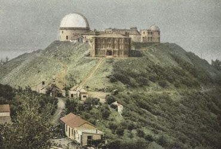 El observatorio Lick a principios del siglo XX.
Llegamos al observatorio alrededor de la una y media. Sólo estaban presentes los astrónomos más jóvenes, con el Dr. Tucker a cargo, dado que el director, Campbell, y los más viejos ya estaban en España preparándose para el eclipse total de sol [del 30 de agosto de 1905]. Como yo todavía estaba planeando ir a ver el eclipse, le pregunté al Dr. Tucker dónde se iba a observar. "En Daroca-Ateca-Almazán," [en realidad, tres localidades diferentes] me contestó. Quedé un poco perplejo, y dije involuntariamente que para mí era "ein spanisches Dorf" ["un poblado español"; "español" en el sentido de "exótico"]. El replicó con calma que, de hecho, era un pueblo español al noreste de Madrid. No sé; el nombre no me hizo una impresión muy favorable; España comenzó a parecerme algo española [el mismo juego de palabras].
Me mostraron todas las facilidades del magníficamente equipado observatorio, que puede usarse en forma muy fructífera en vista de su favorable posición. Lo más notable es el telescopio gigante con la lente de 28 pulgadas pulida por Alvan Clark (la llaman simplemente the big glass) con la que se ha hecho uno de los descubrimientos astronómicos más interesantes de los últimos tiempos: las dos lunas de Marte. Dentro del gigantesco pilar que sostiene el telescopio, está sepultado el ciudadano Lick, que construyó todo el observatorio con sus fondos privados. ¿No es idealista? Puedo leer su mente. El sabía ciertamente que era indiferente dónde terminaran descansando sus huesos, pero quiso dar al mundo una clara indicación de lo que debería ser la finalidad última de un millonario. Compró la inmortalidad con su riqueza.
Si fuera poeta, describiría el encuentro de Schiller y Lick en el Cielo bajo el título "Dos Idealistas". Schiller hace a la Sabiduría decir a la Riqueza: "No te necesito". Lick demuestra lo contrario. Obviamente, las emociones que produce el dinero son placeres de segundo orden; el amor obtenido con dinero no es ni siquiera de tercer orden; sin embargo, un piano Steinway, un violín Amati, un Böcklin y ahora también la inmortalidad pueden obtenerse con dinero.
Quisiera contar aquí otra historia que se relaciona con el idealismo y con hacer dinero. El gran físico americano Rowland había dicho que los estudiosos no deberían deserperarse por hacer dinero. Un año más tarde cayó enfermo, fue examinado por un médico y supo que le quedaban como máximo tres años de vida. Tenía esposa y cuatro hijos todavía sin herencia. En el conflicto de lealtades, ganó su amor familiar. Inventó una teleimpresora, la patentó e hizo una fortuna de 200.000 dólares, alrededor de un millón de coronas [austríacas], para su viuda; murió efectivamente poco tiempo después. Traicionó sus principios, sin embargo. Querido lector, ¿sabes qué es lo que más admiro en Rowland? Que tuviera tan lucrativa invención ya lista. ¡Pueda él también estrechar la mano de Schiller en el Cielo!
El comerciante americano es decididamente realista cuando se trata de hacer dinero. Así fue que un hombre de negocios muy inteligente, al que le expliqué la propuesta de mi visita, no podía entender por qué había viajado hasta San Francisco cuando mis ingresos sólo cubrían el pasaje.
Estuve soñando despierto frente al pilar que sostiene el telescopio y guarda los restos de Mr. Lick en su base. Luego continuamos visitando todas las secciones del observatorio. Allí se hace el mejor uso de la riqueza material. Cada región del cielo tiene su propio gabinete, y en estos cada astro tiene su propio cajón, de forma que todas las observaciones pueden buscarse rápidamente para ser utilizadas. El contenido del archivo crece muy rápido. No sorprende que el tiempo pase velozmente para los astrónomos en su retiro en la montaña. Huelga decir que allí también hay lindas astrónomas.
Por la noche, luego de haber observado Marte a través del gran telescopio, grande y brillante, casi como la faz de la luna, volví al valle. Lo más notable a la vuelta fue la línea donde comenzaba la niebla. Teníamos las estrellas encima nuestro y la neblina debajo como un mar tranquilo. De pronto el coche entró en la niebla, las estrellas desaparecieron, y la luz de los faros del coche penetraban sólo una corta distancia hacia adelante.
Durante el día siguiente (domingo) hice un paseo por San José, pero volví por la tarde para tener mucho tiempo para dormir y preparar mis lecciones.
Mi siguiente excursión dominical fue no menos interesante: una visita a los balnearios de Monterrey, Pacific Grove y Santa Cruz. Ya me había alejado de San Francisco una distancia similar para gozar de la vista del gran océano, pero esta vez tuve la oportunidad de admirar largamente los acantilados y las ondas danzantes del Pacífico. Aunque más que todo esto, me interesaba una pequeña casa en Pacific Grove donde el profesor Löb tiene su laboratorio.
¡Qué diferentes son las grandes fábricas de la industria y los talleres de la ciencia! Los vapores que surcan el océano son colosos impresionantes. Pero una vez que se han hecho varios viajes, resulta claro que los oficiales, los ingenieros y los marinos hacen siempre el mismo trabajo. En las áreas de pasajeros, la misma gente habla de las mismas cosas, se estira sobre las mismas reposeras, todos apuntan con los mismos aros a las mismas pinas en la cubierta superior. ¡Grandes masas, pero ni un sólo pensamiento nuevo! Acepto que en la ciencia se han logrado muchas cosas mediante esfuerzos masivos (lo hemos visto en el observatorio Lick); pero los logros más grandes (claramente, nuestro ministro de educación no debe oir esto) se producen siempre con los medios más modestos.
Debe ser un gran logro controlar el gasto de millones por el bien de una gran nación, ganar batallas a la cabeza de cientos de miles de personas. Pero a mí, sin embargo, me parece aún más importante descubrir verdades en una habitación modesta con fondos modestos, verdades que continuarán siendo la base de nuestro conocimiento cuando la memoria de esas batallas se conserve sólo en los libros de historia. ¿Qué hay todavía vivo de la cultura griega y romana que tiene aún hoy más uso e influencia que antes? Los guerreros de Maratón han sido superados en Vionville y Liaoyang. La gente que lee a Homero o a Sófocles por placer está desapareciendo, pero el teorema de Pitágoras y el principio de Arquímedes son verdaderamente inmortales.
Esta es mi opinión en general; cuánto pueda aplicarse a Pacific Grove en particular se demostrará sólo en desarrollos futuros. El descubrimiento que allí se hizo, cuando todavía era nuevo, me dejó intrigado. Con entusiasmo, lo expliqué en una reunión social, nunca soñando que algo tan objetivo, que no estaba entendido para conjurar sentimientos lascivos -y ciertamente incapaz de hacerlo- se pudiera considerar impropio. La primera indicación fue la abrupta y algo conspicua partida de la dama sentada a mi lado en la mesa. Más tarde la misma dama cantó una muy dudosa canción de Aletter. No puede contenerme y dejar de decir que me sorprendía que esa canción pudiera considerarse apropiada, no así mi tema de conversación. "Efectivamente", dijo la dama, "no entendemos su tema de conversación", y yo contesté involuntariamente: "Pero sí entienden a Aletter". Esta es una de nuestras viejas hipocresías, a la que los abstemios quieren agregar otra. Tendré que elegir mis palabras cuidadosamente de forma de aclarar el objeto de la investigación de Löb sin resultar ofensivo.
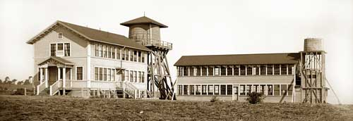 El laboratorio marino Hopkins, lugar de trabajo de Jacques Löb.
Por mucho tiempo se creyó que todos los compuestos químicos presentes en organismos vivos, los llamados compuestos orgánicos, se podían generar solamente mediante una fuerza especial: la fuerza vital. Hoy se sabe que numerosos compuestos orgánicos pueden producirse a partir de los elementos químicos a través de reacciones químicas ordinarias, sin ningún signo de fuerza vital. Mucha gente cree, no obstante, que la vida es en sí algo especial, completamente separado de los procesos químicos que la acompañan, y que los especiales mecanismos de la vida no pueden generarse nunca a partir de sustancias inanimadas. Esta opinión, ciertamente, está lejos de ser contradicha por el trabajo de Löb, pero éste ha agregado un nuevo peso en la balanza del lado de sus desventajas.
Es bien sabido que hay géneros de animales cuyos huevos, bajo determinadas circunstancias, pueden desarrollarse sin fertilización (partenogénesis). Löb estaba trabajando con géneros animales para los que esto nunca ocurre -erizos y estrellas de mar- y mostró que las reacciones que el esperma masculino produce en los huevos pueden realizarse también con ácidos completamente inorgánicos, tal que los huevos sujetos a la acción del ácido carbónico, del ácido butírico y del ácido valproico pueden desarrollarse, en condiciones apropiadas, exactamente de la misma manera que los huevos fertilizados normalmente.
Es fácil ver la importancia del descubrimiento de que un proceso que antes era considerado como la consecuencia de una acción vital específica también puede tener lugar mediante agentes puramente químicos. Si esto es verdad no solamente para los erizos de mar sino para formas de vida superiores, incluso la humana ¡qué revolución social resultaría! La emancipación de la mujer en una forma que las sufragistas de hoy nunca habrían soñado. Los varones resultarían simplemente superfluos; una pequeña botella llena de reactivos cuidadosamente mezclados los reemplazaría completamente. Sería posible organizar la herencia en una forma mucho más racional que ahora, que está sujeta al azar. No pasará mucho tiempo antes de que alguien descubra qué mezcla produce niños, cuál produce niñas, y dado que los primeros serán totalmente innecesarios, se criarán sólo unos pocos ejemplares para los zoológicos. Claramente, para esa época el vino también será superfluo.
Desde Pacific Grove viajé al balneario de Santa Cruz, que resulta especialmente notable porque un gran número de visitantes no se alojan en casas sino en tiendas de lona con pequeñas ventanas de lino que se alquilan como cabañas de vacaciones. Otros viven en pequeñas cabinas construidas sobre botes, con los que se puede navegar por la poco profunda bahía y por los estuarios de los ríos.
En todos lados me asombró el pequeño tamaño de las casas, casi todas de madera. En Berkeley hay muchas casa que me recordaron a las que se encuentran alrededor de Graz y que pertencen a los Schnitzelbauern [pequeños propietarios con habilidad en carpintería], quienes las han construido con tablas de madera en sus diminutos terrenos y decorado con tallas y bajorrelieves.
En otra ocasión, vi los así llamados big trees, que tienen miles de años de antigüedad. Hay un tocón que permite calcular exactamente cuán viejo es contando sus anillos. Olvidé cuánto daba.
Los otros días -sábados y domingos excluidos- estaban dedicados al trabajo, aunque no completamente exentos de entretenimiento. Hubo varias reuniones sociales, incluyendo un par de recepciones muy solemnes. Una vez, un colega que me estaba acompañando me había recomendado con anticipación que fuera de evening dress, mostrando una preocupación verdaderamente inglesa por la corrección. Apenas entró le dije: "¿No me veo bello?" Pero ¡oh, no! Me había olvidado de lustrar los zapatos. Sin embargo, mi colega sabía exactamente qué hacer. Me llevó al sótano, se sacó la chaqueta, el chaleco y los puños, encontró el equipamiento necesario en un armario y lustró mis zapatos con la mayor virtuosidad. Luego, se tomó el vaso del que había salpicado un poco de agua sobre la pomada. ¡Americano!
Tampoco en los círculos sociales faltan las mujeres. Las esposas de los profesores de Berkeley se reunieron con los conferencistas visitantes, al igual que la casera [de Cloyne Court] con sus encantadoras hijas, una de las cuales cantó adorablemente, y otras amigas. Estuve varias veces en tal compañia y fui atacado por otra enfermedad, todavía no mencionada: poetitis. Dado que ya he descripto mis otros males, trataré de dar una idea de éste también; aquí sigue uno de sus productos:
An meine Frau
Sol ich
mit fremden Fraun in der Ferne mich nicht unterhalten?
Sind sie von Allem, was hier, dir
denn am ähnlichsten nicht?
Oft schon küsst' ich dein Bild
auf Pappe: Oh so verzeihe,
Wenn ich dein Bild auch geküsst,
fand ichs in Fleisch und in Blut!
Zudem bin Theoretiker ich von der
Zeh' bis zum Scheitel
Und so vertrau', dass ich auch nur
theoretisch geküsst.
[A mi esposa
¿No debo entretenerme con mujeres
extrañas en tierras distantes?
¿No son ellas, entre todo lo que aquí me rodea, lo que
más se te asemeja?
He besado tu retrato con frecuencia: Disculpa entonces
si, aunque beso tu retrato, también se me aparece de carne y hueso!
En cualquier caso, soy un teórico de pies a cabeza;
créeme que he besado solamente en teoría.]
Es decir, disculpas por todos lados, también por los besos. No fue más que una necesidad poética. ¡Me gustaría ver a alguien capaz de escribir un poema sólo con caminatas en sociedad, conversación, tennis y música!
Las mujeres de California son asombrosamente grandes y robustas, y dado que el crecimiento de sus barbas deja casi siempre poco que desear, tuve que estar de acuerdo con un colega cuando me preguntó: "¿No le parece que las americanas son un poco masculinas?" En cambio, él no estuvo de acuerdo cuando repliqué: "Y los hombres un poco femeninos". Esto último es cierto solamente en lo que respecta a su poca barba; muestran su masculinidad en su fuerte voluntad, coraje, espíritu emprendedor y fuerza de carácter.
Entre los eventos que trajeron variedad a los días de semana estuvo la visita del ministro [es decir, secretario] de guerra americano, que venía de las Filipinas vía San Francisco. Se suponía que Miss Roosevelt [la hija del entonces presidente de E.E.U.U.] estaba en su comitiva, pero no pude verla ni una sola vez. El ministro de guerra participó de una reunión pública en el gran bosque de lifeoaks de la Universidad de Berkeley. ¡Deberían haber oído la cándida franqueza, voluntad y entusiasmo de los discursos! Sólo un ejemplo: el major de Berkeley presentó al ministro de guerra luego de una corta intervención con las siguientes palabras: "¡Este es Mr. Taft! Un buen ministro de guerra, un buen ciudadano y sobre todo y desde todo punto de vista un buen compañero". En inglés, esto suena mucho más familiar: "a good old fellow".
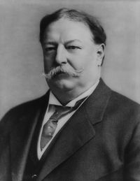 William Howard Taft (1857-1930), luego presidente de E.E.U.U.
Sí, América logrará grandes cosas todavía; creo en esta nación, aún cuando la he visto comprometida en una ocupación en la que no se destaca: integrar y derivar en un seminario de física teórica. En esto, se desempeñan más o menos como yo cuando salto sobre zanjas o me afano subiendo colinas, de las cuales hay tantos en el parque de la Universidad de Berkeley.
Finalmente, llegó la noche en la que oí las canciones de la mozas anteojudas por última vez. Cuando terminé de cortar la última omelette, un colega a mi lado examinó los trozos con ojo de halcón y señaló que quedaba medio minuto para cada uno. Luego, el tren me atrapó y me arrastró, primero a Portland (dos noches de tren). Si bien allí me tentó una exposición, partí en seguida hacia Livingstone (otras dos noches de tren). El viaje fue hermoso; ¡si hubiera sido de día todo el tiempo! La vista más magnífica fue la de Mount Shasta, con su alto pico nevado elevándose por encima de la vegetación subtropical. Pasamos varios lagos rodeados por montañas y bosques, que hacen que el Gmundnersee y el Attersee parezcan insignificantes. No hay casas en sus orillas; ni siquiera sé si todos tienen nombre. Nada diré del parque de Yellowstone. Es una maravilla, y dudo que algo igual exista en el mundo. Léase sobre él en la Baedeker [guía turística] o mírense buenas fotos o, mejor aún, véaselo en la realidad, si se tiene suficiente tiempo, dinero y buena predisposición. No se haga lo que hice yo. Váyase al principio de junio, cuando el calor no es tan intenso, y dedíquesele catorce días o mejor un mes entero, para admirar todo sin apuro y pasar del asombro al placer.
El monte Shasta, en una postal de 1899.
Me había sobrecargado con tantas cosas buenas para hacer. Ahora debía pasar otras cuatro noches en el tren y mi capacidad de gozo estaba tan exhausta como mi provisión de ropa limpia. Además, debía luchar con un calor aplastante. Continuamente agarraba una toalla para enjugarme el sudor; afortunadamente, en los trenes americanos hay muchísimas toallas de mano disponibles. Ahora entiendo lo que es un sudario. Para colmo, a los americanos les gusta cerrar herméticamente los vagones del ferrocarril, no por miedo a las corrientes de aire, a las que no hacen caso, sino para evitar el hollín. En esta línea no hay placenteros vagones de observación en el fondo, donde hay menos hollín. Una vez dejé la ventanilla abierta en mi compartimiento, que estaba bastante adelante, pero quedé tan negro que no me sorprendería si en el siglo que viene algún estudioso postulara la hipótesis de que los negros se volvieron tan negros porque siempre fueron empleados del ferrocarril.
En esta etapa, volvieron mis problemas estomacales. Es posible encontrar vino en el vagón restaurante, aunque de mala gana, sólo después de la comida cuando la mayor parte de los comensales -especialmente las damas- han salido. Lo primero que traen es un vaso de agua helada y una tira de papel, en la que debe escribirse inmediatamente lo que se va a pedir. Pasa una eternidad hasta que retiran el papel y luego uno debe permanecer sentado frente al agua helada con la garganta reseca. Sucumbí a la tentación (hasta los ángeles habrían caído) y bebí un poco del veneno.
Entonces, repentinamente, no pude conseguir más vino. He aquí la explicación: en todo el estado de Nord Dakota [sic] hay veda, y no puede venderse vino mientras el tren está pasando por él. "Qué me importa Nord Dakota", protesté, "yo sólo quiero llegar a Viena. No me importa si me llevan por el país de la pimienta" [Jericó; figurativamente, un lugar muy lejano]. "Oh, por aquí crece mucha pimienta", me contestaron. ¡Al diablo! En este país hasta nuestras mejores bromas se arruinan. Obviamente, por medio de propinas y adicionales conseguí vino, pero tuve que pagarlo subrepticiamente y no lo pude incluir en mis gastos oficiales.
Usualmente, las autoridades del ferrocarril americano agregan vagones sólo cuando los otros están llenos; de todas formas, los trenes son siempre enormemente largos. Los vagones individuales tienen nombres como los barcos, porque de lo contrario los pasajeros se perderían. Yo viajé consecutivamente en Sant Jesabel, Pembina y Vernedal. Estaban llenos de público de todas las nacionalidades, generalmente con vestidos muy livianos por el calor. Un bebé pasaba su tiempo acostado completamente desnudo sobre el asiento de terciopelo y me recordó al niño Jesús, quien ciertamente nunca estuvo acostado en un pullmancar. Quise decirle esto a la madre como cumplido, pero ¡qué horrible suena en inglés: "äs de tscheild tschises kreist"! [suena como "as the child Jesus Christ", leído con fonética alemana].
Es una suerte que yo no haya nacido inglés. Nunca me las habría arreglado para conseguir una novia. Como se puede imaginar, encontré bastante embarazoso hacer una declaración de amor. "Der schaut drein, als müsst er in den Hörsaal hinein" ["Miraba como si debiera entrar al aula"], dice Mefistófeles. ¡Ciertamente, no habría tenido más que entrar a un aula si fueran la Física y la Metafísica a quienes enfrentaba! Pero era, en cambio, una encantadora joven. Al comienzo fue difícil, pero cuando llegué al punktum [sic] saliens la sabiduría y el buen gusto de nuestros antecesores me ayudaron, ya que encontraron la palabra con el mejor sonido para el más noble de los sentimientos: la palabra Liebe [amor]. Exactamente como cuando tocaba el Steinway, yo no controlaba mi lengua, las palabras se me adelantaban, y triunfé. Si hubiera tenido que decir lo mismo en inglés, "Ei lowff ju" [suena como "I love you", leído con fonética alemana], mi elegida habría huido como las gallinas perseguidas por el jadeante estirio cuando se detiene a tomar aliento mientras trata de atraparlas [referencia a un cuento austríaco].
La colorida variedad de viajeros debía apretujarse en la cama durante la noche. Los vagones dormitorio americanos están arreglados así: un pasillo muy estrecho corre por el centro del vagón; a cada lado hay asientos tapizados con espacio para dos personas cada uno. Cada pasajero se dirige a uno de estos asientos. Por la noche cada par de asientos enfrentados en el mismo lado del corredor se transforma en una litera de dos pisos, separada del corredor por cortinas. Las camas están dispuestas paralelas a la dirección en que avanza el tren. Es posible tener dos literas para uno sólo -el compartimiento entero- pero cuesta el doble. Dado que no hay vestidores, hay que llevar el camisón, las pantuflas y demás en un maletín que el camarero pone luego sobre la cama. Cada uno debe desvestirse detrás de la cortina, encontrar lugar para su ropa y el maletín en algún lugar de la cama y luego dormir sin ahogarse.
Cada compartimiento del dormitorio tiene sólo un pequeño agujero de ventilación cubierto por una fina red, que comunica con el aire libre, y cuando hace calor se pone tan húmedo que yo dormí como Dios me trajo al mundo, ahorrándome la molestia de desempacar. Una vez dejé la ventana abierta completamente durante la noche, y a la mañana siguiente el camarero negro se dirigió a mí como "señor colega".
Para evitar perder mi reloj, mi billetera, mis anteojos, etc. dejaba mi sombrero en la red para equipaje, el único depósito en todo el vagón dormitorio, y ponía todos los objetos pequeños adentro. El negro siempre colgaba mi sombrero a una altura inalcanzable cuando hacía las camas, y era cómico ver cuán asombroso le resultaba que yo necesitara mi sombrero en la cama.
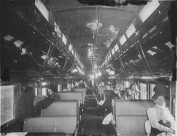 Vagón dormitorio pullman en configuración diurna, a fines del siglo XIX.
El momento más crítico es cuando los asientos se convierten en camas. Es imposible sentarse y las camas todavía no están listas. Huyo al lavatorio, pero hay un pasajero ocupado en cepillarse nubes de polvo de la ropa, en tanto que otro salpica agua en todas direcciones mientras se lava. Trato de alcanzar el coche salón que, dicho sea de paso, no todos los trenes tienen; el único problema es que tengo que pasar por siete u ocho vagones ya preparados para la noche, con las cortinas cerradas. Estas cortinas están vivas: un brazo, un pié, o cosas más blandas propinan golpes al pasante desde el interior de cada litera. Para colmo, uno está continuamente cayéndose encima del equipaje amontonado sobre el piso. Finalmente, encuentro lugar en un compartimiento que todavía tiene los asientos intactos. Del otro lado del corredor ya hay una cama, cuyas cortinas se mueven constantemente. Definitivamente, hay alguna verdad en el concepto de la Mujer Eterna. Cuando paso lista en una clase en Viena es la única parte de los estudiantes que puedo ver, pero siempre reconozco las manos de las estudiantes de inmediato. Por lo tanto, estaba convencido de que esas cortinas ocultaban miembros femeninos; finalmente, se levantaron como una gran ola cuando la ocupante hizo un movimiento descuidado al desvestirse y vi que estaba en lo correcto.
Por la mañana, me evité muchas molestias gracias a mi costumbre de levantarme temprano. Podía vestirme y lavarme solo, y luego increpar a los que se atropellaban por llegar al baño con el Rapto [en el Serrallo] de Mozart, ya citado por Bismarck: "Mich zu hintergeh'n, müsst ihr früh autsteh'n" ["Para engañarme, tienen que levantarse temprano"].
Al final, estaba tan abatido por culpa del calor, del hollín, de mi estómago alterado y de la sed que no sólo decidí dejar pasar el eclipse de sol, sino que traté de hacer la combinación con el Kaiser Wilhelm II, que me habría llevado a casa lo más rápido posible. Justo empezó una huelga de telegrafistas, que nos retrasó seis horas. Yo estaba furioso por esto, pero el comportamiento flemático de los americanos es increíble. Miraban al furioso casi con pena, como si estuvieran pensando que el hombre imaginaba que su rabia ayudaría. El conductor me dijo brevemente: "No queremos arriesgarnos a chocar".
En Chicago me quedaban sólo doce minutos y tenía que llegar de la Union Station de Canalstreet [sic] a la Nickelplate Station. Cargado con mi equipaje, me apuraba sin saber a dónde ir. Dos personas a las que pregunté no me respondieron. Una joven lo notó y me preguntó amablemente qué quería. No me pudo indicar direcciones, pero me señaló a un agente de policía que en mi agitación yo no había notado, a pesar de su tamaño. Mientras, decía de todo corazón a la joven "You are an angel'', no como un cumplido vacío, me dí cuenta de que era idéntica al ángel de la guarda del pozzo di Verona.¿Por qué debería ser pura fantasía creer en los ángeles de la guarda? ¿Cómo se concilia un cuento de hadas con la Union Station en la Canalstreet de Chicago? Así, fui del ángel de la guarda al guarda, quien rápidamente me dio las instrucciones necesarias para llegar a tiempo a la otra estación.
En Nueva York tuve otra sorpresa. El hermoso embarcadero que llevaba de la estación al ferry se había incendiado y tuve que caminar tropezando sobre madera carbonizada, siempre cargado con mi equipaje.
A pesar de estos estorbos llegué al Kaiser Wilhelm II con tiempo suficiente. ¡Cuánto se alivió mi espíritu cuando mi equipaje y yo estuvimos a bordo!
"Stimmet
an die frohen Lieder,
Denn dem väterlichen Herd
Ist das Schiff nun zugekehrt
Und zur Heimat geht es wieder".
["Entonen la alegre canción,
pues al hogar paterno
se dirige de regreso la nave,
y vuelve a la patria".]
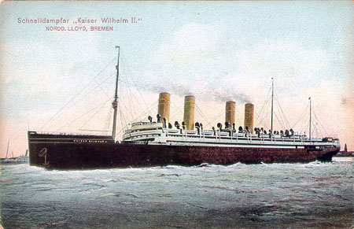 El Kaiser Wilhelm II.
Durante el viaje de vuelta tuvimos un clima soberbio. La excelente comida de a bordo restableció mi salud estomacal completamente. No bebí una gota de agua y muy poca cerveza, pero muchísimo del noble Rüdesheimer. Esta es la gran ventaja de un barco: si uno se balancea un poco, la gente lo atribuye al oleaje.
Todo lo que queda es el insignificante viaje en ferrocarril de Bremen a Viena, un clásico paseo en un coche vienés, y estoy en casa de nuevo. Un viaje como este ofrece experiencias interesantes y gloriosas: California es bellísima, el Mount Shasta magnífico, el parque de Yellowstone maravilloso, pero por lejos la parte más hermosa de todo el viaje es el momento del regreso al hogar.
Esta traducción al castellano de "Reise eines deutschen Professors ins Eldorado" (L. Boltzmann, Populäre Schriften, Barth, Leipzig, 1905) fue realizada en base a la versión inglesa de M. Malt (Annals of Nuclear Energy, 1977) reproducida en C. Cercignani, Ludwig Boltzmann: The man who trusted atoms (Oxford University Press, 1998). La traducción fue luego confrontada con la versión alemana disponible en www.ub.uni-heidelberg.de/helios/fachinfo/www/math/htmg/dorado.pdf, para retocar detalles de estilo y aumentar la compatibilidad del texto castellano con el original.
Las palabras que en la versión original no se encuentran en alemán -así como ciertos nombres alemanes especiales- no se tradujeron, y se indican en itálicas. Asimismo, las citas literarias del texto se mantuvieron en alemán, seguidas por una traducción entre corchetes. La traducción de estas citas fue realizada por Inés Samengo. Otras notas de traducción también se dan entre corchetes.
D.H.Z., marzo de 2006